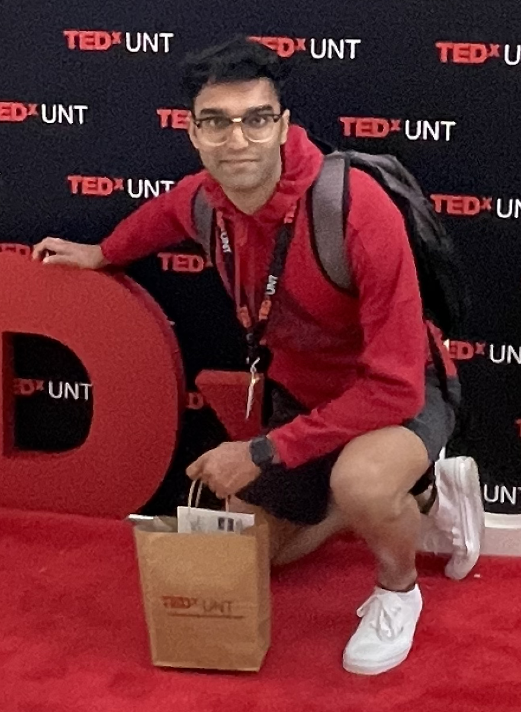

Abhishek Kumar

Professional Profile
Hardworking, flexible, and detail-oriented software and graphic designer seeking an internship in user experience/user interface design.
Core Competencies
Detail-Oriented | Strong Written Communication | Collaboration | Flexibility | Problem Solving
Technical Skills
Adobe Illustrator Certified | Figma | Microsoft Office | Google Suite | Coding
Language Skills
Bilingual proficiency in Hindi
Education
Bachelor of Science in Computer Science (GPA 3.8)
University of North Texas, Denton, Texas
Expected Graduation: May 2026
Honors & Awards
- Dean's List (June 2023 - Present)
- The National Society of Leadership and Success (Sept 2022 - Present)
- Ed Wright Memorial Foundation Board Scholarship (June 2022 - Present)
- Leo & Mabel Scott Scholarship (June 2022 - Present)
- National Honor Society (April 2021 - Present)
Certifications
- LinkedIn: UX Foundations: Research (August 2023)
- LinkedIn: Learning C++ (December 2022)
- Coursera: Foundation of User Experience (UX) Design (Google) (November 2022)
- Adobe Certified Professional Graphic Design & Illustration using Adobe Illustrator (December 2021)
- Coursera: Introduction to User Experience Design (Georgia Institute of Technology) (January 2021)
Experience
IKEA Second-Hand Store Redesign Hackathon (Spring 2024)
User Interface Designer, Lead Presenter, Prototyping
- Competed with 34 teams with a total of 450 participants
- Led the redesign of IKEA's online store, addressing challenges in browsing, listing, and purchasing second-hand furniture online
- Streamlined the process of giving furniture a second life, ensuring scalability and user-friendliness
- Implemented a unique selling proposition to enhance user trust, integrated AI for quick product identification, and QR codes to streamline tasks
- Contributed as the lead presenter and played a key role in drafting UI designs and prototyping
- Aimed to create new market opportunities and secure a larger share of the online second-hand furniture market for increased platform usage
Student Design Haus, TECC East (Class project) (Fall 2021)
Rate Sheet Designer
- Created 5-10 rate sheet design variations for a student design organization, applying design principles and our team style guide in Adobe Illustrator
- Created 3-5 different mockups using Adobe Illustrator, Photoshop, and a third-party website
- Helped with the construction of the team logo using Adobe Illustrator and Photoshop
- Contributed as the lead presenter for the rate sheet design
Leadership, Campus, & Community Involvement
Denton County India Cultural Association (DCICA), Member (September 2022 – Present)
User Experience Student Association, Member (September 2022 – Present)
Indian Students Association, Member (August 2022 – Present)
UNT Transfer Center, Member (August 2022 – Present)
Eye Level Learning Center, Volunteer (May 2018 – August 2020)
- Set up the furniture, sorted books, did inventory, and graded homework
Tarrant Area Food Bank, Volunteer (June 2017 – May 2021)
- Unpacked, organized, and distributed food to people in need
- Set up food stations at church and handed food
Flower Mound Public Library, Volunteer (April 2017 – May 2021)
- Responsible for shelving, sorting, and organizing books
Other